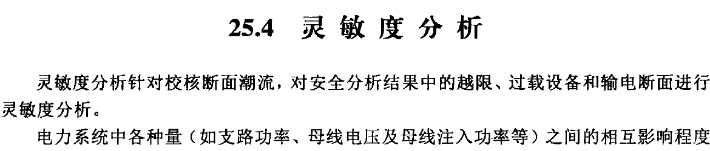
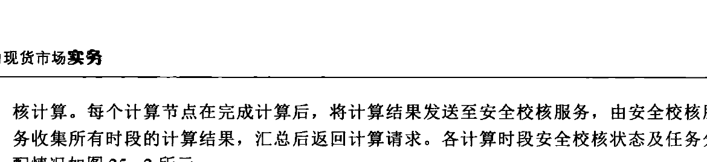

根据潮流结果判断电网各设备是否满足安全运行要求，主要检查线路潮流是否过载、变压器是否过负荷、稳定断面有功功率是否满足控制限额要求、母线电压是否满足运行电压范围要求。
基态潮流分析检验输电线路有功功率是否满足式（25-1），输电线路有功限额采用式（25-2）计算，即
式中：$P_{\text{L}}$ 为线路有功功率；$P_{\text{Lmax}}$ 为线路有功限额，MW；$U_{\text{L}}$ 为线路运行电压，kV；$I_{\text{Lmax}}$ 为线路长期电流上限，kA；$\cos\varphi$ 为功率因数。
基态潮流分析检验变压器各侧绕组有功功率是否满足式（25-3），变压器额定有功采用式（25-4）计算，即
式中：$P_{\text{T}}$ 变压器绕组有功功率；$P_{\text{Tmax}}$ 为变压器绕组有功限额，MW；$S_{\text{T}}$ 为变压器额定容量，MVA；$\cos\varphi$ 为功率因数。
基态潮流校核检验稳定断面有功功率是否满足式（25-5），稳定断面有功潮流采用式（25-6）计算，即
式中：$P_{\text{WD}}$ 为稳定断面有功功率；$P_{\text{WD,pos}}$ 为稳定断面正向限额，MW；$P_{\text{WD,neg}}$ 稳定断面反向限额，MW；WD 为稳定断面组成元件集合；$P_i$ 为第 $i$ 个组成元件有功；$K_i$ 为第 $i$ 个组成元件有功系数。
基态潮流校核检验母线电压是否满足式（25-7），即
式中：$U_{\text{bus}}$ 为母线电压幅值；$U_{\text{bus,max}}$ 为母线运行电压上限；$U_{\text{bus,min}}$ 为母线运行电压下限。
25.3 静态安全分析
静态安全分析根据校核断面自动生成形成的校核断面潮流，分析 $N-1$ 故障和指定故障集下的设备越限情况。
分析计算设备（或设备组合）开断后的潮流分布，并校验线路、变压器是否满足短时限额要求。
静态安全分析检验输电线路有功是否满足式（25-1），输电线路短时有功限额采用式（25-2）计算。不同的是，$P_{\text{Lmax}}$ 为线路短时有功限额，$I_{\text{Lmax}}$ 为线路短时电流上限。
静态安全分析检验变压器各侧绕组有功是否满足式（25-3），不同的是，$P_{\text{Tmax}}$ 为变
压器绕组短时有功限额，采用式（25-8）计算，即
式中：$K$ 为变压器短时允许过负荷系数。
25.4 灵敏度分析
灵敏度分析针对校核断面潮流，对安全分析结果中的越限、过载设备和输电断面进行灵敏度分析。
电力系统中各种量（如支路功率、母线电压及母线注入功率等）之间的相互影响程度称为灵敏度，灵敏度分析计算上述量之间的关系。电力市场仅考虑有功时，主要用到支路有功灵敏度。支路有功灵敏度为节点注入有功功率增加 1 单位，导致的支路有功功率的变化量。支路有功灵敏度用于在 SCUC/SCED 模型中建立支路有功潮流约束，此外，支路有功灵敏度还用于计算节点电价的阻塞分量。
25.5 基于服务的安全校核智能并行计算
基于服务的安全校核智能并行计算，构建在电力现货市场技术支持系统统一平台上，利用统一平台的服务总线进行数据交互，利用消息总线进行通讯交互。总体功能架构如图 25-1 所示。长周期机组组合、日前市场、日内市场、实时市场向安全校核发起计算请求，安全校核计算完成后，返回计算结果。

安全校核需要对多个计划断面进行潮流计算，每个计划断面都有完全独立的数据，不受前后时段的耦合影响，因此首先可以将安全校核进行多时段解耦，每一个时段都单独采用一个计算节点进行计算。
各应用向安全校核服务发起计算请求，并将全部计算数据发送至安全校核服务；安全校核服务接收到计算请求之后，对计算任务和计算数据进行拆分，以计算时段为标签将计算数据分解打包发送至不同的计算节点，由不同的计算节点完成一个时段的安全校核
核计算。每个计算节点在完成计算后，将计算结果发送至安全校核服务，由安全校核服务收集所有时段的计算结果，汇总后返回计算请求。各计算时段安全校核状态及任务分配情况如图25-2所示。

25.6 本章小结
安全校核是市场出清过程中重要的安全分析手段，通过交流潮流计算来分析市场出清结果是否存在断面或设备越限，安全校核与市场出清功能之间通过相互迭代来保障出清结果满足电网安全约束要求。本章详细介绍了计划拓扑生成与分析、基态潮流分析、静态安全分析、灵敏度分析等安全校核功能原理；阐述基于服务的安全校核智能并行计算功能，实现安全校核与长周期机组组合、日前市场、日内市场、实时市场等市场间的并行计算。
第26章 市场分析
市场分析是基于电力交易不同环节的数据信息形成体系化的指标，对市场供给、市场竞争、电网安全等情况进行全面评估分析，从而揭示市场发展趋势，反映市场运营问题，为电力市场的健康发展和市场规则的进一步完善提供依据。
电力现货市场是在一定的政治、经济、技术条件下实现电网运行和市场运营的安全、公平、绿色、高效等目标，而市场组织开展按照交易规则分为事前（交易申报关闭前）、事中（交易出清结束前）、事后（交易出清结束后）三个阶段。因此市场分析模块的功能需将市场目标同交易时间相结合进行实现，具体结构如图26-1所示。